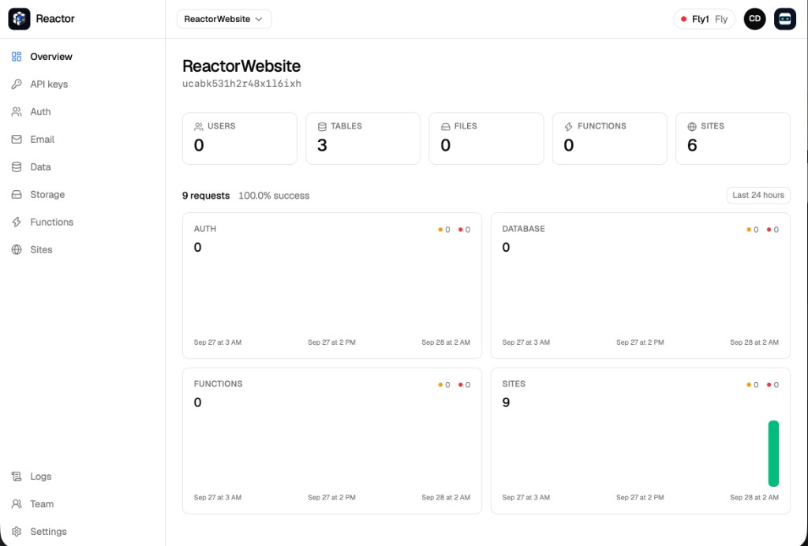

Open source
Your full stack deployment solution,created for AI
Supabase and Vercel, in a single CLI. Auth, Postgres, storage, functions, and the site. The full project, in seconds.
Deploy the todos app. Auth, the table, the site, and ping. $ reactor deploy migrations applied functions ping live site http://{ref}.apps.localhost:18000
One server. The whole stack.
The same pieces you would stitch together from a database platform and a deploy platform. One project, one origin, one command.
Auth
Email, passwords, magic links, and sessions. The anon key is what the app ships with.
/data/v1Data
Postgres through PostgREST. Row-level security is on, and forced.
/storage/v1Storage
Presigned uploads and downloads. The server never proxies the bytes.
/fn/v1Functions
A zip of Bun, or a Lambda. Invoke the live version. Pin an older one when you need to.
{ref}.domainSites
The project’s files, on its own host, in the same deploy as the API.
Console
One view with full control
Users, tables, files, functions, and sites, then the last 24 hours of auth, database, function, and site traffic. This is the operator console. It is not the login your app ships.
Console docs
$ reactor projects create todos --link anon key printed once service key .reactor/service_key $ reactor deploy migrations applied functions ping live site http://{ref}.apps.localhost:18000 $ reactor functions promote ping 2
CLI
One CLI with full access
Create it, apply the migrations, and publish the functions and the site. The same reactor binary your agent runs.
Reactor Operator
One AI agent to help
It sits in the console, on the project you have open. It can create the project, a table, a user, a file, and publish the site. Refs come from the tools. Keys are not repeated.
How the agent runsAdd a notes table and publish the site.
create_table notes
put_site_file index.html
Table notes is live. index.html is published on the open project.
admins ada
schema proj_todos
site todos.apps.localhost
functions ping
admins noah
schema proj_notes
site notes.apps.localhost
functions summarize
Multitenancy
One multi-tenant cluster
A cluster holds many projects. Each one has its own administrators, and its database schema, site, functions, storage, and keys are independent of every other project on that cluster.
How projects isolate